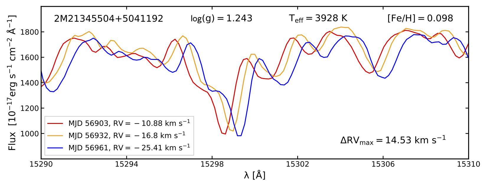
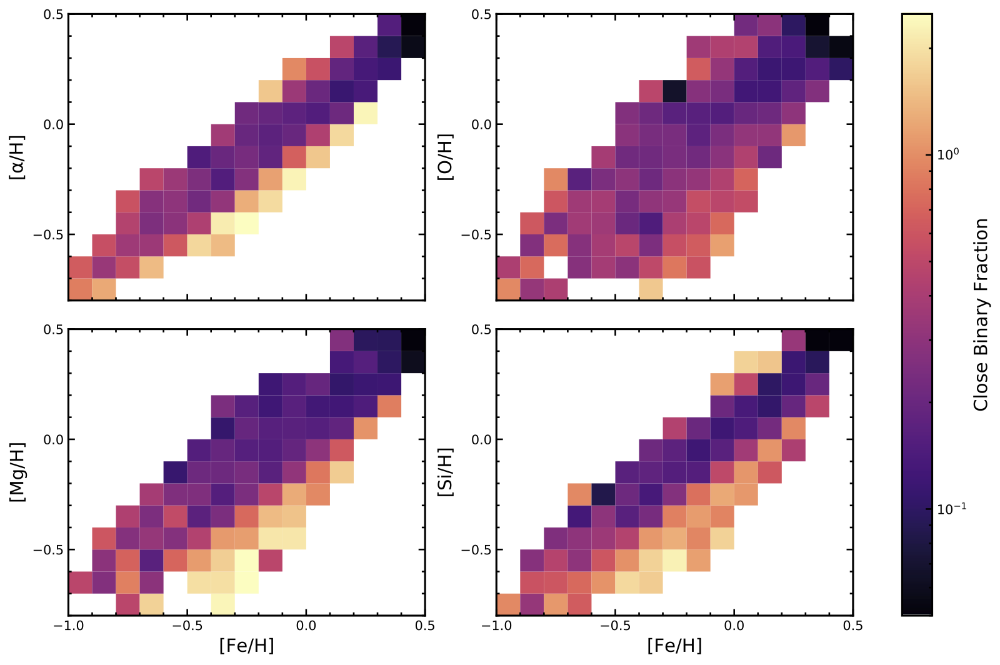

About Me
Education: M.S. U. Pittsburgh, B.S Mississippi State University, both in Physics
Research Interests: Stellar multiplicity and its effects on the stellar lifecycle--how it affects 1) stellar formation, 2) the stars during their MS/RGB lives, 3) the stars' deaths, and all things between!
Publications: You can find a current list of my publications on ADS here.
Research

A set of spectra for a typical star in APOGEE DR14.
Stellar Multiplicity and Stellar Parameters in APOGEE
Within the SDSS-IV APOGEE-2 survey, my advisor Carles Badenes and I, alongside our colleagues, have looked at numerous sets of parameters and their relationships with stellar multiplicity. We accomplish this by using the sample's distribution of ΔRVmax (maximum shifts in the radial velocities, RVs) as a proxy for the occurrence of close binaries. A star that has a ΔRVmax far in excess of what can be explained by RV uncertainties can be presumed to have a short-period companion; with the high-quality spectra from APOGEE, we can study systems with periods up to 10,000 days in this manner. This method only requires that stars have 2+ visits, allowing us to keep the majority of APOGEE's sample. For reference, out of XXXX stars in APOGEE data release 16, XX% have only 2 visits, YY% have 3, and ZZ% have 4 or more!
I've worked or am working on several sub-projects within this research topic.
- Evolution, Metallicity, and Multiplicity in DR13
- As a star progresses up the red giant branch (RGB), it grows in size, which has unfortunate implications for very short-period companions. We saw evidence for removal of these short-period systems via trends between ΔRVmax and the stars' surface gravity log(g), shown below. We also found an anti-correlation between ΔRVmax and [Fe/H]. Our work was published in The Astrophysical Journal in Feb. 2018, and our anti-correlation was further studied and confirmed in Moe, Kratter, and Badenes 2019.
- Presentations:
- Poster at the 2019 SDSS collaboration meeting in Ensenda, Mexico.
Fig. 5 from Badenes et al. 2018.
- Stellar Multiplicity and Parameters in DR14, especially α abundances
- In this project, we compared an assortment of stellar parameters against the distribution of ΔRVmax for a selection of APOGEE DR14 dwarfs/subgiants (log(g)≥3.25). The parameters we considered included effective temperature and several elemental abundances from APOGEE DR14, as well as masses, ages, and parameters related to the stars' galactic orbital motions from Sanders & Das et al. 2018. The relationships we saw are complex and difficult to characterize without a thorough study, but one set of trends stood out above the rest. The anti-correlation with [Fe/H] was again found, but we also discovered a further anti-correlation with four α abundances, as shown in the figure below. The results are being written up at the moment and should appear on the ArXiv soon.
- Presentations:
- Lightning talk and poster at the 2019 SDSS collaboration meeting in Ensenda, Mexico.

A preliminary plot showing the observed anti-correlation between the completeness-corrected close binary fraction and various α abundances.
Impact
Mentoring
My own successes have been in part due to the patience and guidance of my own mentors, and in turn, I have greatly enjoyed providing mentoring as an older graduate student.
- Fall 2019-Spring 2020: mentored four new graduate students through their first year in the program
- Summer 2019: helped Dr. Badenes mentor two undergraduate students through summer research projects
- Fall 2018-Spring 2019: mentored three new graduate students through their first year in the program
Equity & Inclusion
Diversity enriches science and the departments where scientific research occurs. When possible, I try to take every opportunity to foster diversity.
As an undergraduate at Mississippi State University, I participated in our local chapter of the Society of Physics Students (SPS), and I was vice president for our chapter for the 2015 spring and fall terms. I also attended the 2015 and 2016 APS Conference for Undergraduate Women in Physics (CUWiP), which were both incredible experiences for connecting me with other women in the field.
Since then, I have been a member of U. Pitt's Women and Minorities in Physics group, enabling me to participate in discussions of our department's climate and listen to the experiences of other students. I attended two workshops organized by the university in Nov. 2019: the Negotiation and Management Workshop for Women in Sciences, and the Women in Medicine and Science Forum. Both provided informative sessions as well as valuable networking experiences with female students, faculty, and adminstration. Finally, I and several other volunteers presented several tables' worth of physics demonstrations for attendees at the 2020 CUWiP jointly hosted by U. Pitt and Carnegie Mellon University.
Teaching
- ASTRON 0089: Stars, Galaxies, and the Cosmos
- Fall 2016: 5 recitations ~ 180 students total
- Spring 2017: 5 recitations ~ 180 students total
- Spring 2019: 1 recitation ~ 30 students total
- ASTRON 0088: Stonehenge to Hubble
- Spring 2019: 3 recitations for 2 instructors, two with ~ 30 students each and the other with ~ 50
- PHYS 0091: Conceptual Physics
- Spring 2020: 1 recitation with ~ 25 students, second half I helped all ~ 50 students (moved to online classes)
Talks
- Sept. 17, 2019: Astrosnacks Seminar Series, Carnegie Mellon University
Python Plotting 101 (.ipynb)
Contact
Click here to email me. Click here to visit my GitHub profile.
Desk #14 Allen 300
3941 O'Hara Street
Pittsburgh, PA 15260
Send me an email if you'd like to discuss research, and we'll arrange a time to chat!